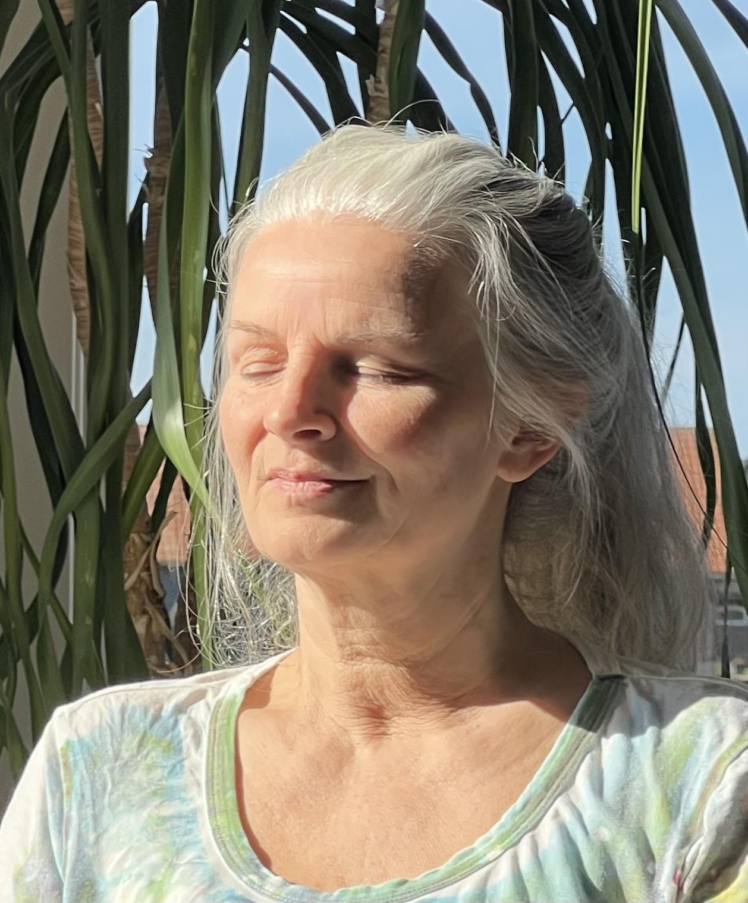
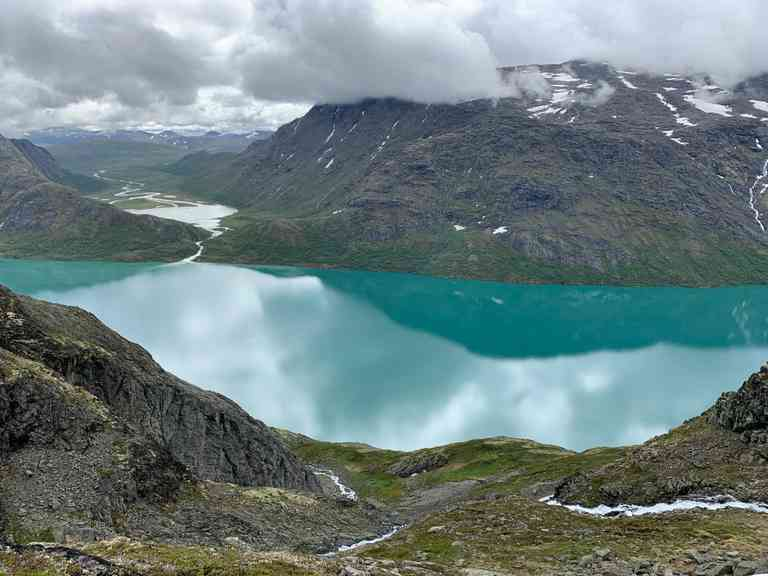

Opplev personlige spirituelle konsultasjoner med Live Sørlie
Oppdag indre fred, klarhet og veiledning på din reise mot velvære. Din spirituelle reise er unik – la meg guide deg til å oppdage din egen vei.
Utforsk tjenesterMed over ti års erfaring innen spirituell terapi og healing
Live har dedikert sitt liv til å hjelpe andre med å finne fred, klarhet og retning på deres spirituelle reise. Hennes unike tilnærming kombinerer tradisjonelle terapiteknikker med spirituell veiledning, og skaper et trygt og nærrende rom for transformasjon og vekst.
Live tror at hver person har den indre visdommen til å hele og blomstre. Gjennom sine konsultasjoner hjelper hun klienter med å utnytte denne visdommen og skape varig positiv endring i livene deres.
Å gå i naturen kan hjelpe deg å koble til ro og klarhet

Finn klarhet gjennom stille stunder i naturen.